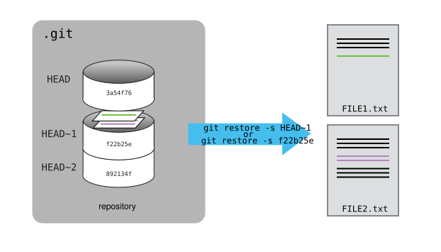

Exploring History
Last updated on 2025-02-04 | Edit this page
Estimated time: 25 minutes
Overview
Questions
- How can I identify old versions of files?
- How do I review my changes?
- How can I recover old versions of files?
Objectives
- Explain what the HEAD of a repository is and how to use it.
- Identify and use Git commit numbers.
- Compare various versions of tracked files.
- Restore old versions of files.
There are no specific slides for this episode. You could consider keeping the slides open to the episode on the basics of Git, to show the visual representation of the changes in the repository.
Consider doing this episode as a demo and not as live coding if time is short. The aim is to demonstrate to participants the possibility to go back and forth through the git log, which is enough for an introduction to git. In practice, you only use this feature occasionally.
In this episode you will learn some basic concepts about the git commit history. Remember that git can serve as a sort of time machine, going back and forth between historical commits. In practice, you only use this feature occasionally, so we will only explain some core concepts that will allow you to go back and forth between commits (maybe with some help of a search engine, but at least you know what you are searching for).
Two ways of referring to a commit
As we saw in the previous episode, one way we can refer to commits is
by their identifiers. The Commit ID is a 40-character
random string, like:
f22b25e3233b4645dabd0d81e651fe074bd8e73b.
Since this is a unique hash, you can also refer to just the first few
characters of the commit ID: f22b25e.
You can also refer to commits by using the identifier
HEAD. HEAD points to the most recent
commit of the working directory. You can use HEAD~1 to
refer to previous commits relative to HEAD (where “~” is
“tilde”, pronounced [til-duh]).
The number behind ~ indicates the number of commits
before HEAD. So HEAD~2 points to two commits
before HEAD.
See the overview figure below:

Using diff with specific commits
We’ve been adding one line at a time to mars.txt, so
it’s easy to track our progress by looking:
OUTPUT
Cold and dry, but everything is my favorite color
The two moons may be a problem for Wolfman
But the Mummy will appreciate the lack of humidityNow, let’s see the difference between the current version of the file
and 2 commits before HEAD.
OUTPUT
diff --git a/mars.txt b/mars.txt
index df0654a..b36abfd 100644
--- a/mars.txt
+++ b/mars.txt
@@ -1 +1,4 @@
Cold and dry, but everything is my favorite color
+The two moons may be a problem for Wolfman
+But the Mummy will appreciate the lack of humidityWe could also use git show which shows us what changes
we made at an older commit as well as the commit message, rather than
the differences between a commit and our working directory that
we see by using git diff.
OUTPUT
commit f22b25e3233b4645dabd0d81e651fe074bd8e73b
Author: Vlad Dracula <vlad@tran.sylvan.ia>
Date: Thu Aug 22 09:51:46 2013 -0400
Start notes on Mars as a base
diff --git a/mars.txt b/mars.txt
new file mode 100644
index 0000000..df0654a
--- /dev/null
+++ b/mars.txt
@@ -0,0 +1 @@
+Cold and dry, but everything is my favorite colorWe can also refer to commits using commit IDs Our first commit was
given the ID f22b25e3233b4645dabd0d81e651fe074bd8e73b, and
we know we can shorten that to f22b25e.
So let’s try:
OUTPUT
diff --git a/mars.txt b/mars.txt
index df0654a..93a3e13 100644
--- a/mars.txt
+++ b/mars.txt
@@ -1 +1,4 @@
Cold and dry, but everything is my favorite color
+The two moons may be a problem for Wolfman
+But the Mummy will appreciate the lack of humidityRestoring older versions
All right! So we can save changes to files and see what we’ve changed. Now, how can we restore older versions of things?
We can use the git restore command to do that.
We can use the ‘source’ flag -s to specify a commit
identifier:
OUTPUT
Cold and dry, but everything is my favorite colorOUTPUT
On branch main
Changes not staged for commit:
(use "git add <file>..." to update what will be committed)
(use "git restore <file>..." to discard changes in working directory)
modified: mars.txt
As you can see this changes the file to the version of the commit
that we specified using the -s flag.
We can put things back the way they were by using
git restore again, by default it restores a file to the
most recent commit:
It’s important to remember that we must use the commit number that
identifies the state of the repository before the change we’re
trying to undo. A common mistake is to use the number of the commit in
which we made the change we’re trying to discard. In the example below,
we want to retrieve the state from before the most recent commit
(HEAD~1), which is commit f22b25e:

Simplifying the Common Case
If you read the output of git status carefully, you’ll
see that it includes this hint:
OUTPUT
(use "git restore <file>..." to discard changes in working directory)As it says, git restore without a version identifier
restores files to the state saved in HEAD.
The fact that files can be reverted one by one tends to change the way people organize their work. If everything is in one large document, it’s hard (but not impossible) to undo changes to the introduction without also undoing changes made later to the conclusion. If the introduction and conclusion are stored in separate files, on the other hand, moving backward and forward in time becomes much easier.
Recovering Older Versions of a File
Jennifer has made changes to the Python script that she has been working on for weeks, and the modifications she made this morning “broke” the script and it no longer runs. She has spent ~ 1hr trying to fix it, with no luck…
Luckily, she has been keeping track of her project’s versions using
Git! Which commands below will let her recover the last committed
version of her Python script called data_cruncher.py?
$ git restore$ git restore data_cruncher.py$ git restore -s HEAD~1 data_cruncher.py$ git restore -s <unique ID of last commit> data_cruncher.pyBoth 2 and 4
The answer is (5)-Both 2 and 4.
The restore command restores files from the repository,
overwriting the files in your working directory. Answers 2 and 4 both
restore the latest version in the repository of the
file data_cruncher.py. Answer 2 doesn’t specify a commit,
which means it automatically refers to the latest, whereas
answer 4 uses the unique ID of the last commit, which would be the same
as using HEAD instead.
Answer 3 gets the version of data_cruncher.py from the
commit before HEAD, which is NOT what we
wanted.
Answer 1 reports an error
fatal: you must specify path(s) to restore: you haven’t
specified which file(s) to restore. It’s a good idea to be specific
about which files you mean,so you don’t accidentally restore more files
than you need. If you do want to restore all previously committed files
in your repository, you can use . to specify the current
folder (and all subfolders), i.e., git restore ..
Reverting a Commit
Jennifer is collaborating with colleagues on her Python script. She
realizes her last commit to the project’s repository contained an error,
and wants to undo it. Jennifer wants to undo correctly so everyone in
the project’s repository gets the correct change. The command
git revert [erroneous commit ID] will create a new commit
that reverses the erroneous commit.
The command git revert is different from
git restore -s [commit ID] because git restore
returns the files not yet committed within the local repository to a
previous state, whereas git revert reverses changes
committed to the local and project repositories.
Below are the right steps and explanations for Jennifer to use
git revert, what is the missing command?
________ # Look at the git history of the project to find the commit IDCopy the ID (the first few characters of the ID, e.g. 0b1d055).
git revert [commit ID]Type in the new commit message.
Save and close
The command git log lists project history with commit
IDs.
The command git show HEAD shows changes made at the
latest commit, and lists the commit ID; however, Jennifer should
double-check it is the correct commit, and no one else has committed
changes to the repository.
Understanding Workflow and History
What is the output of the last command in
BASH
$ cd planets
$ echo "Venus is beautiful and full of love" > venus.txt
$ git add venus.txt
$ echo "Venus is too hot to be suitable as a base" >> venus.txt
$ git commit -m "Comment on Venus as an unsuitable base"
$ git restore venus.txt
$ cat venus.txt #this will print the contents of venus.txt to the screen- ```output Venus is too hot to be suitable as a base
2. ```output
Venus is beautiful and full of love- ```output Venus is beautiful and full of love Venus is too hot to be suitable as a base
4. ```output
Error because you have changed venus.txt without committing the changesThe answer is 2.
The command git add venus.txt places the current version
of venus.txt into the staging area. The changes to the file
from the second echo command are only applied to the
working copy, not the version in the staging area.
So, when
git commit -m "Comment on Venus as an unsuitable base" is
executed, the version of venus.txt committed to the
repository is the one from the staging area and has only one line.
At this time, the working copy still has the second line (and
git status will show that the file is modified). However,
git restore venus.txt replaces the working copy with the
most recently committed version of venus.txt.
So, cat venus.txt will output
OUTPUT
Venus is beautiful and full of love.Checking Understanding of git diff
Consider this command: git diff HEAD~9 mars.txt. What do
you predict this command will do if you execute it? What happens when
you do execute it? Why?
Try another command, git diff [ID] mars.txt, where [ID]
is replaced with the unique identifier for your most recent commit. What
do you think will happen, and what does happen?
Getting Rid of Unstaged Changes
git restore can be used to restore a previous commit
when unstaged changes have been made, try it out by making some changes
to mars.txt.
Then use git restore mars.txt to revert the change.
Add a line to mars.txt:
OUTPUT
Cold and dry, but everything is my favorite color
The two moons may be a problem for Wolfman
But the Mummy will appreciate the lack of humidity
An ill-considered changeWe can put things back the way they were by using
git restore:
OUTPUT
Cold and dry, but everything is my favorite color
The two moons may be a problem for Wolfman
But the Mummy will appreciate the lack of humidity-
git diffdisplays differences between commits. -
git restorerecovers old versions of files.